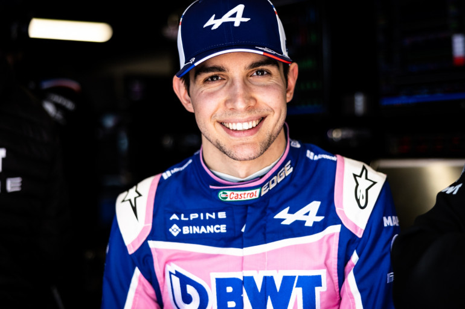

Alpine
Après avoir changé d’identité en 2021, la structure d’Enstone porte fièrement depuis l’an passé le nom Alpine. Objectif : faire revivre cette marque victorieuse en rallye et en endurance. Si ce nom est nouveau en catégorie reine, Alpine n’est donc dans les faits que la continuité de Renault possédant elle une longue histoire en F1. Le constructeur français a notamment brillé dans les années 2000, avec Flavio Briatore et Fernando Alonso en remportant deux titres mondiaux en 2005 et 2006.
Les pilotes de la saison 2022 :
Esteban Ocon

Titré du championnat d’Europe de F3 devant Max Verstappen en 2014 puis vainqueur du GP3 Series en 2015, Esteban Ocon débarque en Formule 1 en 2016. Il effectue alors ses débuts en Belgique à seulement 20 ans. Lors de ses premières courses, il fait preuve d’une bonne vitesse et d’une grande régularité, ces caractéristiques qui font sa force vont lui permettre de rejoindre Force India en 2017. Lors de son passage dans l’équipe indienne, Esteban Ocon réalise des prestations solides et se montre au niveau de Perez. En 2019, Lance Stroll récupère le siège d’Esteban Ocon, forçant le pilote à quitter la F1. De retour avec Renault à partir de 2020, il réalisera alors une incroyable saison notamment en décrochant son premier succès ainsi que celui d’Alpine en Formule 1 lors du Grand Prix de Hongrie.
Fernando Alonso
Vainqueur de son premier Grand Prix en Hongrie en 2003, Fernando Alonso et Renault se construisent ensemble pour détrôner Michael Schumacher en 2005 et remporter un second titre de champion en 2006. En 2007, lorsqu’il débarque chez McLaren en tant que champion en titre, il va se retrouver confronter à un des futurs plus grands pilotes de l’histoire de la Formule 1 : Lewis Hamilton. En 2010, Fernando Alonso donne un nouveau souffle à sa carrière en signant chez Ferrari. En fin 2014, après n’avoir absolument rien gagné, il quitte le navire Ferrari pour effectuer un impensable retour chez McLaren. À la fin de la saison 2018, fatigué, Alonso décide de faire un break avec la Formule 1. En 2021, le double champion du monde fait son grand retour en catégorie reine avec Alpine. Après avoir réalisé un podium au Qatar, Fernando Alonso espère à présent qu’Alpine lui donnera la possibilité de renouer avec la victoire.